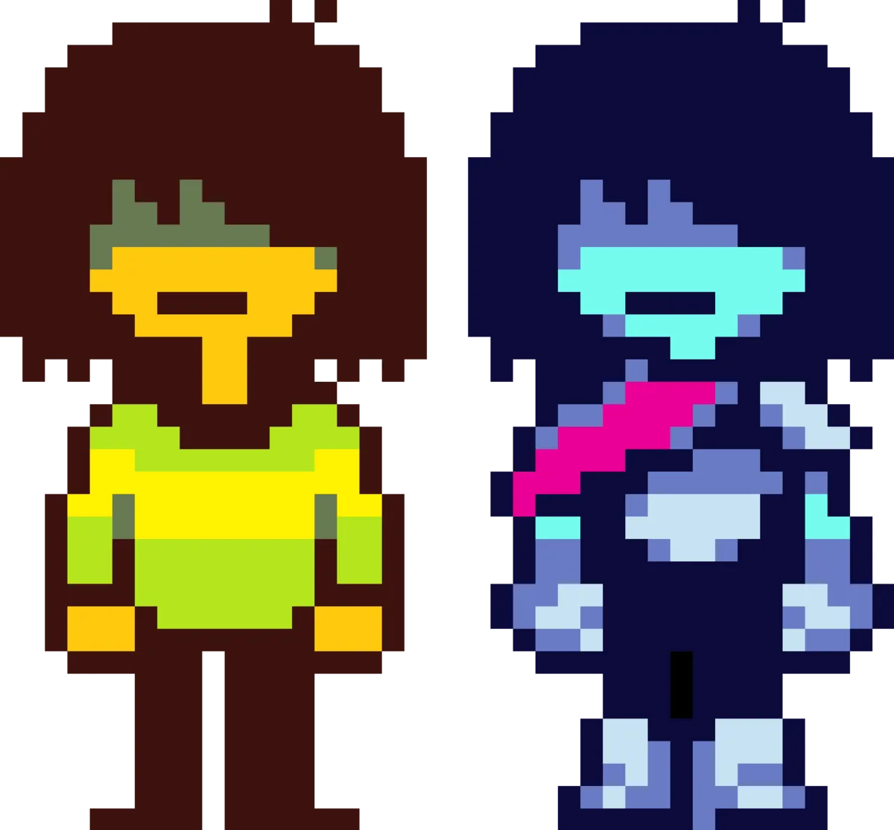
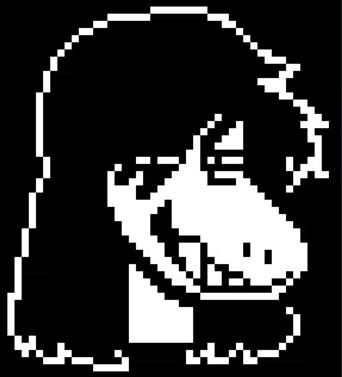
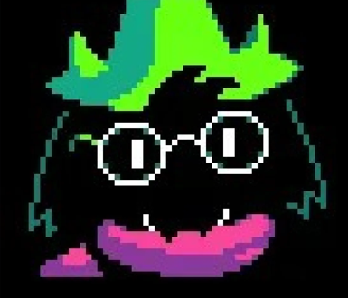

Um repositório dedicado ao universo de Deltarune.
Nesta página vamos caracterizar um pouco cada um dos principais personagens.

Kris Dreemurr é o protagonista de Deltarune e o personagem que controlamos durante a maior parte da aventura. É um humano que vive na cidade de Hometown com a sua família e frequenta a escola juntamente com Susie. Durante a história, Kris acaba por entrar num Dark World, onde conhece Susie e Ralsei. A partir desse momento, os três começam uma aventura para impedir a criação de Dark Fountains e restaurar o equilíbrio entre os diferentes mundos. Kris é uma personagem bastante reservada, sendo que muitas das suas ações e decisões são influenciadas pelo jogador. Apesar de falar pouco, tem uma relação importante com os restantes personagens e participa diretamente nos acontecimentos principais da história.

Susie é um monstro e colega de turma de Kris. No início da história, apresenta-se como uma personagem agressiva, rebelde e pouco interessada nas outras pessoas. No entanto, ao entrar no Dark World juntamente com Kris, começa a mudar a sua maneira de agir. Durante a aventura, Susie torna-se uma importante companheira de Kris e Ralsei. Apesar da sua personalidade agressiva, demonstra preocupação pelos seus amigos e está disposta a ajudá-los quando necessário. A sua força física também faz dela uma das principais combatentes do grupo. Ao longo da história, Susie vai desenvolvendo relações mais próximas com os outros personagens e mostrando um lado mais amigável e divertido da sua personalidade.

Ralsei é o príncipe do Dark World e um dos principais companheiros de Kris e Susie. É uma personagem gentil, educada e bastante pacífica, que procura ajudar os outros e evitar conflitos sempre que possível. Quando Kris e Susie chegam ao Dark World, Ralsei explica-lhes a profecia dos três heróis e pede a sua ajuda para impedir a criação de novas Dark Fountains. A partir desse momento, acompanha os dois durante a aventura e ajuda o grupo com os seus conhecimentos e poderes. Apesar de preferir resolver os problemas de forma pacífica, Ralsei também é capaz de lutar quando necessário. A sua personalidade amigável faz dele uma personagem importante para o grupo e para o desenvolvimento da história.